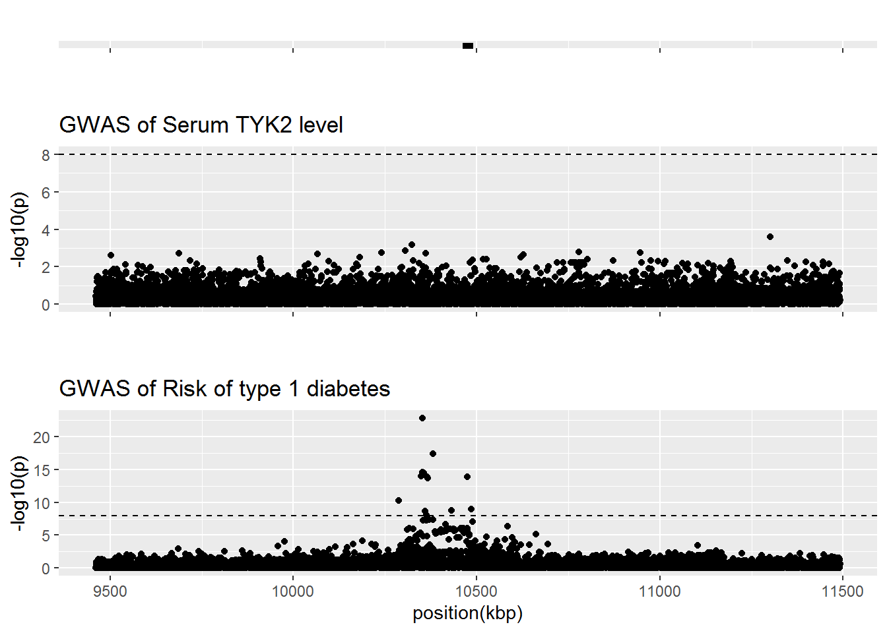

TYK2
Tea Heikkilä, Emilia Kaiser & Jaakko Koskenniemi
2022-26-04
Last updated: 2023-05-04
Checks: 6 1
Knit directory: T1DSCREEN/
This reproducible R Markdown analysis was created with workflowr (version 1.7.0). The Checks tab describes the reproducibility checks that were applied when the results were created. The Past versions tab lists the development history.
The R Markdown file has unstaged changes. To know which version of
the R Markdown file created these results, you’ll want to first commit
it to the Git repo. If you’re still working on the analysis, you can
ignore this warning. When you’re finished, you can run
wflow_publish to commit the R Markdown file and build the
HTML.
Great job! The global environment was empty. Objects defined in the global environment can affect the analysis in your R Markdown file in unknown ways. For reproduciblity it’s best to always run the code in an empty environment.
The command set.seed(20220313) was run prior to running
the code in the R Markdown file. Setting a seed ensures that any results
that rely on randomness, e.g. subsampling or permutations, are
reproducible.
Great job! Recording the operating system, R version, and package versions is critical for reproducibility.
Nice! There were no cached chunks for this analysis, so you can be confident that you successfully produced the results during this run.
Great job! Using relative paths to the files within your workflowr project makes it easier to run your code on other machines.
Great! You are using Git for version control. Tracking code development and connecting the code version to the results is critical for reproducibility.
The results in this page were generated with repository version f6788b7. See the Past versions tab to see a history of the changes made to the R Markdown and HTML files.
Note that you need to be careful to ensure that all relevant files for
the analysis have been committed to Git prior to generating the results
(you can use wflow_publish or
wflow_git_commit). workflowr only checks the R Markdown
file, but you know if there are other scripts or data files that it
depends on. Below is the status of the Git repository when the results
were generated:
Ignored files:
Ignored: .Rhistory
Ignored: .Rproj.user/
Ignored: data/README_cis_eqtl.txt
Ignored: data/README_cis_eqtl_AF.txt
Ignored: data/cis-EQTL-AF.txt
Ignored: data/cis_sumstats/2018-07-18_SNP_AF_for_AlleleB_combined_allele_counts_and_MAF_pos_added.txt
Ignored: refs/
Untracked files:
Untracked: data/cis_eqtl_sumstats/
Untracked: data/cis_sumstats/JAK1_T1D.rds
Untracked: data/cis_sumstats/JAK3_T1D.rds
Untracked: data/export/IFNAR2_eqtl_TwoSampleMR.csv
Untracked: data/export/IL2RA_eqtl_TwoSampleMR.csv
Untracked: data/export/IL2RB_eqtl_TwoSampleMR.csv
Untracked: data/export/IL2RG_eqtl_TwoSampleMR.csv
Untracked: data/export/IL6R_eqtl_TwoSampleMR.csv
Untracked: data/export/JAK1_T1D_TwoSampleMR.csv
Untracked: data/export/JAK1_eqtl_TwoSampleMR.csv
Untracked: data/export/JAK2_eqtl_TwoSampleMR.csv
Untracked: data/export/JAK3_T1D_TwoSampleMR.csv
Untracked: data/export/JAK3_eqtl_TwoSampleMR.csv
Untracked: data/export/TYK2_eqtl_TwoSampleMR.csv
Unstaged changes:
Modified: .gitignore
Deleted: analyses/CRP.Rmd
Deleted: analyses/CXCL10.Rmd
Modified: analyses/IL2RB.Rmd
Deleted: analyses/TNF.Rmd
Modified: analyses/TYK2.Rmd
Modified: code/Gather.R
Modified: code/linux-shell-script-wget-and-decompress.txt
Deleted: data/IL6R_crp_LDmat-2023-04-25.RData
Note that any generated files, e.g. HTML, png, CSS, etc., are not included in this status report because it is ok for generated content to have uncommitted changes.
These are the previous versions of the repository in which changes were
made to the R Markdown (analyses/TYK2.Rmd) and HTML
(docs/TYK2.html) files. If you’ve configured a remote Git
repository (see ?wflow_git_remote), click on the hyperlinks
in the table below to view the files as they were in that past version.
| File | Version | Author | Date | Message |
|---|---|---|---|---|
| html | 50537ef | jkoskenniemi | 2023-05-03 | Build site. |
| Rmd | cc02856 | jkoskenniemi | 2023-05-03 | Added eQTL data |
| html | e0d3987 | jkoskenniemi | 2023-04-28 | Build site. |
| html | cfd36db | Jaakko Koskenniemi | 2023-04-26 | Build site. |
| html | b91e251 | Jaakko Koskenniemi | 2023-04-26 | Build site. |
| html | c132eaa | Jaakko Koskenniemi | 2023-04-26 | Build site. |
| Rmd | 956f020 | Jaakko Koskenniemi | 2023-04-26 | Fixed issue affecting the X-axis of gene figures in Manhattan plots |
| html | c8d146f | Jaakko Koskenniemi | 2023-04-26 | Build site. |
| html | 3eb9b15 | Jaakko Koskenniemi | 2023-04-26 | Build site. |
| Rmd | 0e13d7a | Jaakko Koskenniemi | 2023-04-26 | First commit |
| html | 24d77f3 | Jaakko Koskenniemi | 2022-11-05 | Build site. |
| Rmd | e86595d | Jaakko Koskenniemi | 2022-11-05 | wflow_publish(c("analyses/CRP.Rmd", "analyses/CXCL10.Rmd", "analyses/IL2RA.Rmd", |
Load packages and import data
library(tidyverse)-- Attaching packages --------------------------------------- tidyverse 1.3.1 --v ggplot2 3.4.1 v purrr 0.3.4
v tibble 3.1.7 v dplyr 1.0.9
v tidyr 1.2.0 v stringr 1.4.0
v readr 2.1.2 v forcats 0.5.1Warning: package 'ggplot2' was built under R version 4.2.2-- Conflicts ------------------------------------------ tidyverse_conflicts() --
x dplyr::filter() masks stats::filter()
x dplyr::lag() masks stats::lag()library(data.table)
Attaching package: 'data.table'The following objects are masked from 'package:dplyr':
between, first, lastThe following object is masked from 'package:purrr':
transposelibrary(coloc)This is a new update to coloc.library(TwoSampleMR)TwoSampleMR version 0.5.6
[>] New: Option to use non-European LD reference panels for clumping etc
[>] Some studies temporarily quarantined to verify effect allele
[>] See news(package='TwoSampleMR') and https://gwas.mrcieu.ac.uk for further detailslibrary(ggpubr)
library(ieugwasr)API: public: http://gwas-api.mrcieu.ac.uk/
Attaching package: 'ieugwasr'The following object is masked from 'package:TwoSampleMR':
ld_matrixlibrary(rio)Warning: package 'rio' was built under R version 4.2.2library(here)Warning: package 'here' was built under R version 4.2.2here() starts at C:/Users/jajoko/Documents/T1DSCREENhere::i_am("analyses/TYK2.Rmd")here() starts at C:/Users/jajoko/Documents/T1DSCREEN#eQTL
Load packages and import data
TYK2_eqtl <- read_exposure_data("data/export/TYK2_eqtl_TwoSampleMR.csv", sep=",")Warning in format_data(as.data.frame(exposure_dat), type = "exposure", snps =
NULL, : se column is not numeric. Coercing...Warning in format_data(as.data.frame(exposure_dat), type = "exposure", snps = NULL, : The following SNP(s) are missing required information for the MR tests and will be excluded
rs34725611
rs2304256
rs11085727
rs35251378
rs11085725
rs11085730
rs11879191
rs34953890
rs35164067
rs11669299
rs12720270
rs11670704
rs12983921
rs10416143
rs11672021
rs60167376
rs62130736
rs74179926
rs35452057
rs58172634
rs74179925
rs11666164
rs7259385
rs1051738
rs10415088
rs7259088
rs8101195
rs280497
rs35084366
rs11670508
rs12974442
rs430092
rs281423
rs281422
rs7247481
rs280519
rs281427
rs91755
rs7259116
rs7343087
rs8112449
rs280526
rs280525
rs62131889
rs11880990
rs35615354
rs12982179
rs8101473
rs11085732
rs7249459
rs8112675
rs12983665
rs11878853
rs17697965
rs11085731
rs12978984
rs12978105
rs11881782
rs6417247
rs10854116
rs12977594
rs35916055
rs11878501
rs34266232
rs34159543
rs12611227
rs7253917
rs75688257
rs34681319
rs12610298
rs3760650
rs2043330
rs7260594
rs7253185
rs113540846
rs112350143
rs753859
rs57653312
rs7246953
rs60956147
rs11668623
rs59351473
rs11671552
rs11666754
rs11085734
rs34246431
rs11670504
rs4804133
rs12720250
rs12720248
rs12720233
rs12720235
rs12720222
rs12720231
rs74179927
rs28382805
rs61451658
rs12459219
rs28378712
rs12985305
rs10408642
rs280523
rs12720260
rs12720253
rs73923215
rs4804135
rs11668429
rs12720214
rs77477628
rs12981942
rs9676881
rs1048290
rs28834106
rs11882133
rs60542850
rs62131887
rs2633973
rs1387025
rs35951601
rs1352426
rs7245388
rs35221071
rs12720352
rs6511701
rs12720234
rs2304237
rs10408916
rs55765999
rs7250656
rs10403396
rs3176769
rs7254041
rs7254330
rs7253912
rs7257871
rs3176766
rs3176767
rs3176768
rs6511698
rs281434
rs7258015
rs2633971
rs12720328
rs9807913
rs12971603
rs34585310
rs34723380
rs513663
rs1058154
rs477174
rs4804134
rs7250300
rs7249914
rs11669094
rs2358681
rs7248408
rs7256672
rs117845533
rs115947017
rs74644412
rs144309607
rs2569703
rs78527617
rs7247667
rs61198164
rs35359804
rs117039536
rs117196614
rs11666263
rs7247893
rs2230399
rs710845
rs280498
rs73510898
rs281440
rs203999
rs281439
rs12720356
rs74179931
rs35929247
rs12720346
rs5030347
rs10411056
rs35373372
rs118171875
rs12720279
rs280521
rs8111359
rs281417
rs12462944
rs378395
rs395782
rs12720299
rs901886
rs11575071
rs12720307
rs11575072
rs7409490
rs79709391
rs3745261
rs56381248
rs281416
rs79487480
rs77489129
rs58852827
rs59125425
rs2358581
rs62640397
rs117569384
rs117734369
rs2304258
rs55732741
rs17000730
rs76525253
rs2231486
rs150096100
rs78083518
rs75617577
rs79442975
rs75850379
rs3745263
rs78630786
rs3745262
rs3181049
rs56286467
rs149383028
rs144457626
rs118036551
rs144816341
rs77291073
rs28382774
rs281420
rs56003768
rs79618866
rs55821462
rs144977144
rs13306429
rs144584313
rs79627557
rs55651720
rs78763691
rs77027367
rs78344052
rs185824625
rs17000708
rs147198376
rs78899861
rs76255695
rs190630833
rs3181046
rs80120234
rs78370725
rs77358503
rs117495488
rs79406755
rs117083751
rs17000699
rs182844296
rs76109397
rs77837238
rs76829093
rs75681283
rs77070081
rs147406468
rs141342588
rs55779981
rs75420883
rs142284963
rs79947303
rs77783303
rs76812489
rs74944457
rs79889104
rs80348279
rs1045384
rs12984834
rs34031043
rs78195795
rs4804501
rs79758628
rs112599736
rs73019227
rs3176764
rs3181047
rs77000928
rs11673632
rs80262216
rs78404141
rs35193259
rs149658244
rs77072129
rs77952821
rs45524632
rs2304240
rs185380354
rs149410973
rs55925728
rs140428507
rs144581076
rs144161253
rs144303718
rs138208481
rs28372821
rs142413827
rs78372513
rs79817709
rs141749460
rs144659401
rs150547837
rs142663484
rs142770866
rs139561821
rs146039497
rs2304238
rs2304239
rs17697947
rs148534836
rs5030377
rs141000043
rs75231016
rs147664744
rs12462703
rs7408233
rs12983510
rs150778385
rs4804500
rs12459144
rs147965647
rs8100564
rs34157869
rs12460981
rs12462855
rs12975591
rs191954384
rs7245877
rs150461309
rs7258615
rs12720302
rs8108236
rs12720320
rs28382801
rs114758136
rs113456243
rs10404367
rs146020300
rs5498
rs186255753
rs34197572
rs75206631
rs76415590
rs76669781
rs140735577
rs76884064
rs78902064
rs55898302
rs78503130
rs34924007
rs34346015
rs34256230
rs183464907
rs150549387
rs923366
rs117679371
rs148055837
rs35597394
rs148841287
rs35295222
rs28382800
rs151009655
rs192560669
rs117281937
rs115347026
rs34777454
rs78623539
rs74457164
rs2163857
rs2129944
rs34177255
rs3093029
rs35817519
rs117576526
rs12461980
rs77782871
rs117591554
rs147239058
rs74204086
rs62130696
rs2569702
rs11878494
rs141567219
rs76134468
rs144563376
rs34403566
rs118167193
rs11879158
rs12463093
rs74367067
rs12460655
rs28382780
rs59451338
rs150445689
rs141059827
rs79918623
rs12720219
rs2278442
rs892188
rs28382788
rs6511694
rs190740393
rs11881227
rs11879176
rs146067009
rs2569693
rs77376335
rs74806945
rs76456798
rs75375271
rs114170067
rs117320342
rs78255613
rs78415953
rs138119840
rs11575074
rs10416653
rs117761027
rs12977237
rs510506
rs9749588
rs117539637
rs77995435
rs138523949
rs140752376
rs2075742
rs62130688
rs7247198
rs1056538
rs12610026
rs80161551
rs2228615
rs62130686
rs78064630
rs12972990
rs114268653
rs147262407
rs144649149
rs62130687
rs118115488
rs62130685
rs55939834
rs11085735
rs78854124
rs146564035
rs3093030
rs5030397
rs117454376
rs7256518
rs885743
rs79343819
rs12720326
rs34016352
rs140283599
rs147622113
rs1124765
rs116947105
rs5030390
rs77587461
rs12608948
rs78021472
rs4804556
rs8106630
rs62131895
rs147255904
rs8104304
rs11878588
rs2075741
rs10416073
rs34312839
rs3177696
rs146795181
rs4804528
rs76560514
rs139311191
rs74795234
rs114202680
rs144427215
rs12720280
rs75523935
rs61223991
rs150109720
rs12150978
rs8104480
rs11668544
rs12720294
rs4371271
rs55677033
rs75095909
rs78853431
rs79362074
rs111870775
rs144295214
rs11666993
rs74630689
rs11880594
rs7259486
rs12984270
rs8108977
rs7258189
rs8100910
rs60314748
rs11490554
rs280499
rs10411252
rs189762945
rs6511695
rs117679913
rs12720281
rs150434441
rs4804512
rs12720283
rs8099996
rs6511696
rs4804503
rs140789286
rs62131898
rs75055018
rs80066865
rs146329737
rs76619635
rs10418435
rs8103309
rs75508516
rs281414
rs12720218
rs12720215
rs112387158
rs117093042
rs191571564
rs113337445
rs9797720
rs59919460
rs117784065
rs2011172
rs7253253
rs12986385
rs1560712
rs4804138
rs281415
rs280524
rs2231482
rs115771260
rs1968445
rs117798643
rs892080
rs141848087
rs8113091
rs143978290
rs7253965
rs10426276
rs145427182
rs11878887
rs4024546
rs12720293
rs11878725
rs1465702
rs2043306
rs12720216
rs8100756
rs11085749
rs2017213
rs2163856
rs7258215
rs75407602
rs8107703
rs10854114
rs146531345
rs6511697
rs17000728
rs4804496
rs77793651
rs7251693
rs11671350
rs6511702
rs62130684
rs2033493
rs7259597
rs7250265
rs8111338
rs2116941
rs113207017
rs78200042
rs79185120
rs10854115
rs8104426
rs142238940
rs76123728
rs111645853
rs193000890
rs4804142
rs112739873
rs4804526
rs4804505
rs8102623
rs76215286
rs111799733
rs56335280
rs8099957
rs76925188
rs9973219
rs11666992
rs34370923
rs11672431
rs11879293
rs61282597
rs11670097
rs61692159
rs4804547
rs139154013
rs139437835
rs7245722
rs12980685
rs8102273
rs73003512
rs17616105
rs74179956
rs150908276
rs79927583
rs35991287
rs76499861
rs8103559
rs57434220
rs34949626
rs4804557
rs111380365
rs74428614
rs8103948
rs74178201
rs7254474
rs6511718
rs3786723
rs11668706
rs148313380
rs12985734
rs75239980
rs77482332
rs148215750
rs77389625
rs34837972
rs57579358
rs11671888
rs60412558
rs7257769
rs10404517
rs7275
rs10417578
rs8101254
rs73018660
rs12971616
rs35479557
rs10409578
rs11669339
rs34677258
rs60448955
rs35175941
rs8108935
rs35568987
rs11665795
rs12610374
rs73011374
rs76638997
rs79982275
rs74179958
rs281419
rs3786725
rs7259156
rs35734575
rs117212815
rs11085757
rs75184451
rs1975160
rs10418111
rs113878361
rs79011483
rs141611067
rs12983312
rs3786727
rs61244955
rs75323740
rs11881260
rs12609501
rs11879571
rs11669103
rs11879026
rs74179939
rs75192074
rs117707627
rs11669125
rs11671107
rs62129985
rs8106381
rs11666925
rs34318261
rs143928955
rs12976693
rs10409001
rs62129964
rs35781735
rs74827019
rs4804553
rs113379022
rs35093578
rs11668224
rs7258256
rs12979266
rs12609502
rs35887384
rs75864054
rs11670205
rs7252007
rs150538767
rs10415811
rs12983573
rs876794
rs113680403
rs60956778
rs11666990
rs56385993
rs11673439
rs17265047
rs112508627
rs12977506
rs62128754
rs11668364
rs12610607
rs36045835
rs5030348
rs139742916
rs4804554
rs141625758
rs12975916
rs12976824
rs68010235
rs12979495
rs35519966
rs4804529
rs12611017
rs75407647
rs14052Warning in format_data(as.data.frame(exposure_dat), type = "exposure", snps =
NULL, : None of the provided SNPs can be used for MR analysis, they are missing
required information.TYK2_T1D <- read_outcome_data("data/export/TYK2_T1D_TwoSampleMR.csv", sep=",")
TYK2 <- harmonise_data(TYK2_eqtl, TYK2_T1D)Harmonising Whole blood TYK2 mRNA (4vucPG) and Risk of type 1 diabetes (xN25Oe)Removing the following SNPs for being palindromic with intermediate allele frequencies:
rs1037686, rs10409562, rs10413630, rs10416414, rs10417443, rs10421649, rs11085587, rs113098768, rs113623676, rs11668706, rs11673302, rs12460740, rs12710260, rs12979606, rs12981155, rs12981841, rs12982396, rs12982962, rs12985305, rs13344456, rs1368459, rs1644726, rs1644730, rs1862471, rs2016304, rs2075741, rs2287813, rs2305792, rs2361222, rs2445885, rs2569703, rs2738446, rs2738448, rs281432, rs322144, rs322145, rs3786698, rs3826709, rs3826803, rs4611572, rs4804507, rs4804526, rs55686442, rs61032644, rs62128757, rs6511685, rs67475684, rs6887, rs710845, rs7245579, rs7252965, rs7254559, rs7256356, rs7256625, rs7258340, rs73017023, rs749261, rs753859, rs8112953, rs8113000, rs8182463, rs885743, rs896412, rs918539, rs9973219Manhattan plots
#create Manhattan plots with vertical lines indicating the selected area (see below 2.4)
TYK2_eqtl.fig <-
TYK2 %>%
ggplot(aes(x = pos.exposure/1000, y=-log10(pval.exposure))) +
geom_point()+
geom_hline(yintercept=8, linetype="dashed")+
ggtitle("GWAS of TYK2 gene expression in blood") +
ylab("-log10(p)") +
xlab(NULL)
TYK2_T1D.fig <-
TYK2 %>%
ggplot()+
geom_point(mapping=aes(x = pos.exposure/1000, y=-log10(pval.outcome))) +
geom_hline(yintercept=8, linetype="dashed")+
# geom_vline(xintercept=36.9e6/1000, linetype="dashed")+
# geom_vline(xintercept=37.3e6/1000, linetype="dashed")+
ggtitle("GWAS of risk of T1D") +
ylab("-log10(p)") +
xlab("position(kbp)")
#Obtain range for figure of gene
layer_scales(TYK2_T1D.fig)$x$range$range[1] 9572.19 11474.33TYK2_gene.fig <-
ggplot(data = TYK2) +
geom_blank() +
geom_segment(x=37521.878, xend=37571.094, y=1, yend=1, linewidth = 2) +
annotate("text", label = "TYK2",
x= (37521.878 + 37571.094) / 2, y=1, hjust = 0.5, vjust = -1) +
xlim(36521.878, 38571.094) +
ylim(0.75, 2) +
ylab(NULL) + xlab(NULL) +
theme(axis.text.y = element_blank(), axis.ticks.y = element_blank(),
panel.grid.major.y = element_blank(),
panel.grid.minor.y = element_blank())
fig_TYK2_manhattan <- ggarrange(TYK2_gene.fig, TYK2_eqtl.fig, TYK2_T1D.fig,
heights = c(1, 3, 3), nrow = 3,
ncol = 1, align = "hv")
# ggsave("figures/TYK2-manhattan-combined-fig.pdf",
# height = 6, width = 8, units = "in")Coloc assuming 1 causal variant
#recode MAF
TYK2 <- TYK2 %>%
mutate(maf.exposure = ifelse(eaf.exposure < 0.5, eaf.exposure, 1-eaf.exposure)) %>%
mutate(maf.outcome = ifelse(eaf.outcome < 0.5, eaf.outcome, 1-eaf.outcome))
colnames(TYK2) [1] "SNP" "effect_allele.exposure" "other_allele.exposure"
[4] "effect_allele.outcome" "other_allele.outcome" "beta.exposure"
[7] "beta.outcome" "eaf.exposure" "eaf.outcome"
[10] "remove" "palindromic" "ambiguous"
[13] "id.outcome" "pos.outcome" "pval.outcome"
[16] "se.outcome" "ncase.outcome" "ncontrol.outcome"
[19] "samplesize.outcome" "outcome" "mr_keep.outcome"
[22] "pval_origin.outcome" "data_source.outcome" "pval.exposure"
[25] "pos.exposure" "samplesize.exposure" "se.exposure"
[28] "exposure" "mr_keep.exposure" "pval_origin.exposure"
[31] "id.exposure" "data_source.exposure" "action"
[34] "mr_keep" "maf.exposure" "maf.outcome" D1 <- list(
type = "quant", # quantitative trait
pvalues = TYK2$pval.exposure,
N = TYK2$samplesize.exposure,
MAF = TYK2$maf.exposure,
pos = TYK2$pos.exposure,
snp = TYK2$pos.exposure,
sdY = 1)
D2 <- list(
type = "cc", # case-control trait
Beta = TYK2$beta.outcome,
varBeta = TYK2$se.outcome,
pvalues = TYK2$pval.outcome,
N = 18942+501638, # Case-control study (Chiou et al. 2021 Nature)
s = 18942/(18942+501638), # N_case/(N_case+ N_ctrl)
MAF = TYK2$maf.exposure, #eqtl used here in purpose
pos = TYK2$pos.outcome,
snp = TYK2$pos.outcome)
check_dataset(D1)NULLcheck_dataset(D2)NULLcoloc_TYK2 <- coloc.abf(D1, D2, p1 = 1e-4, p2 = 1e-4, p12 = 1e-5)PP.H0.abf PP.H1.abf PP.H2.abf PP.H3.abf PP.H4.abf
2.62e-03 9.90e-01 1.53e-06 5.75e-04 6.37e-03
[1] "PP abf for shared variant: 0.637%"sensitivity(coloc_TYK2, "H4 > 0.7")Results fail decision rule H4 > 0.7
pQTL
TYK2_prot <- read_exposure_data("data/export/TYK2_prot_anno_TwoSampleMR.csv", sep=",")
TYK2 <- harmonise_data(TYK2_prot, TYK2_T1D)Harmonising Serum TYK2 level (qs1g78) and Risk of type 1 diabetes (xN25Oe)Removing the following SNPs for incompatible alleles:
rs151165116, rs183479123, rs185264289, rs373524333, rs374964295, rs534737045, rs537688931, rs544285808, rs546195204, rs555277654, rs558187292, rs558830521, rs571297393, rs571727951, rs572069029, rs747556448, rs757688587, rs767437573, rs77444625, rs775432199, rs779038836Removing the following SNPs for being palindromic with intermediate allele frequencies:
rs1037686, rs10409562, rs10416414, rs10417443, rs11085587, rs11668537, rs11668706, rs11673302, rs12462944, rs12975236, rs12979606, rs12981841, rs12982396, rs12982962, rs12985305, rs13344456, rs1368459, rs1644726, rs1644730, rs1862471, rs1895371, rs1968236, rs2075741, rs2161468, rs2287813, rs2305792, rs2445885, rs2569703, rs2738446, rs2738448, rs281432, rs322144, rs322145, rs3786698, rs3826709, rs3826803, rs4804161, rs4804526, rs55686442, rs61032644, rs62104327, rs62128757, rs6511685, rs67475684, rs6887, rs710845, rs7245579, rs7252965, rs7254559, rs7256625, rs7258340, rs73017023, rs749261, rs753859, rs8112953, rs8113000, rs8182463, rs885743, rs896412, rs918539, rs9973219Manhattan plots
There are no GWAS hits in TYK2 levels in serum. Thus, coloc and MR is not done.
[1] 9461.514 11491.155
sessionInfo()R version 4.2.1 (2022-06-23 ucrt)
Platform: x86_64-w64-mingw32/x64 (64-bit)
Running under: Windows 10 x64 (build 14393)
Matrix products: default
locale:
[1] LC_COLLATE=Finnish_Finland.1252 LC_CTYPE=Finnish_Finland.1252
[3] LC_MONETARY=Finnish_Finland.1252 LC_NUMERIC=C
[5] LC_TIME=Finnish_Finland.1252
attached base packages:
[1] stats graphics grDevices utils datasets methods base
other attached packages:
[1] here_1.0.1 rio_0.5.29 ieugwasr_0.1.5 ggpubr_0.4.0
[5] TwoSampleMR_0.5.6 coloc_5.1.0.1 data.table_1.14.2 forcats_0.5.1
[9] stringr_1.4.0 dplyr_1.0.9 purrr_0.3.4 readr_2.1.2
[13] tidyr_1.2.0 tibble_3.1.7 ggplot2_3.4.1 tidyverse_1.3.1
loaded via a namespace (and not attached):
[1] matrixStats_0.62.0 fs_1.5.2 lubridate_1.8.0 httr_1.4.3
[5] rprojroot_2.0.3 tools_4.2.1 backports_1.4.1 bslib_0.4.0
[9] utf8_1.2.2 R6_2.5.1 irlba_2.3.5 nortest_1.0-4
[13] DBI_1.1.3 colorspace_2.0-3 withr_2.5.0 tidyselect_1.1.2
[17] gridExtra_2.3 curl_4.3.2 compiler_4.2.1 git2r_0.30.1
[21] glmnet_4.1-4 cli_3.6.0 rvest_1.0.2 xml2_1.3.3
[25] labeling_0.4.2 sass_0.4.2 scales_1.2.0 mixsqp_0.3-43
[29] digest_0.6.29 foreign_0.8-82 rmarkdown_2.14 pkgconfig_2.0.3
[33] htmltools_0.5.2 mr.raps_0.2 highr_0.9 dbplyr_2.2.1
[37] fastmap_1.1.0 rlang_1.0.6 readxl_1.4.0 susieR_0.12.16
[41] rstudioapi_0.13 farver_2.1.1 shape_1.4.6 jquerylib_0.1.4
[45] generics_0.1.3 jsonlite_1.8.0 zip_2.2.0 car_3.1-0
[49] magrittr_2.0.3 Matrix_1.4-1 Rcpp_1.0.8.3 munsell_0.5.0
[53] fansi_1.0.3 abind_1.4-5 viridis_0.6.2 lifecycle_1.0.3
[57] stringi_1.7.6 whisker_0.4 yaml_2.3.5 carData_3.0-5
[61] plyr_1.8.7 grid_4.2.1 promises_1.2.0.1 crayon_1.5.1
[65] lattice_0.20-45 cowplot_1.1.1 splines_4.2.1 haven_2.5.0
[69] hms_1.1.1 knitr_1.39 pillar_1.8.0 ggsignif_0.6.3
[73] codetools_0.2-18 reprex_2.0.1 glue_1.6.2 evaluate_0.15
[77] modelr_0.1.8 vctrs_0.5.2 tzdb_0.3.0 httpuv_1.6.5
[81] foreach_1.5.2 cellranger_1.1.0 gtable_0.3.0 reshape_0.8.9
[85] assertthat_0.2.1 cachem_1.0.6 openxlsx_4.2.5.1 xfun_0.31
[89] broom_1.0.0 rstatix_0.7.0 later_1.3.0 survival_3.3-1
[93] viridisLite_0.4.0 iterators_1.0.14 workflowr_1.7.0 ellipsis_0.3.2